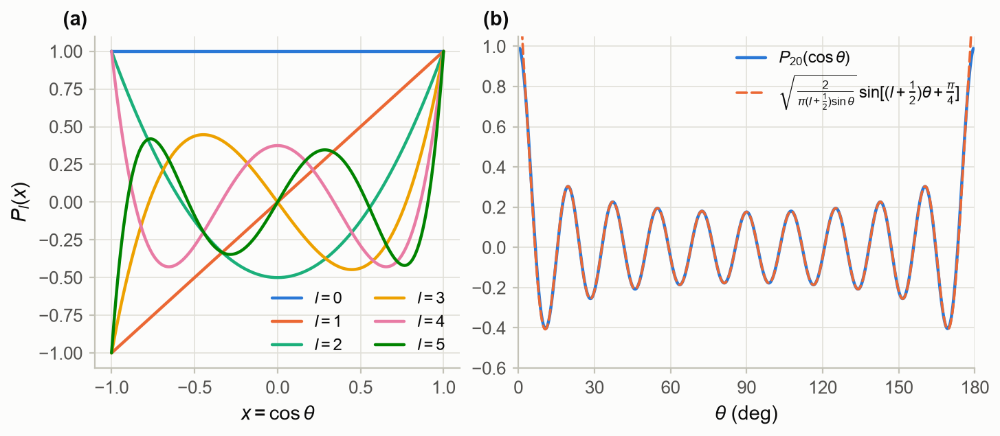
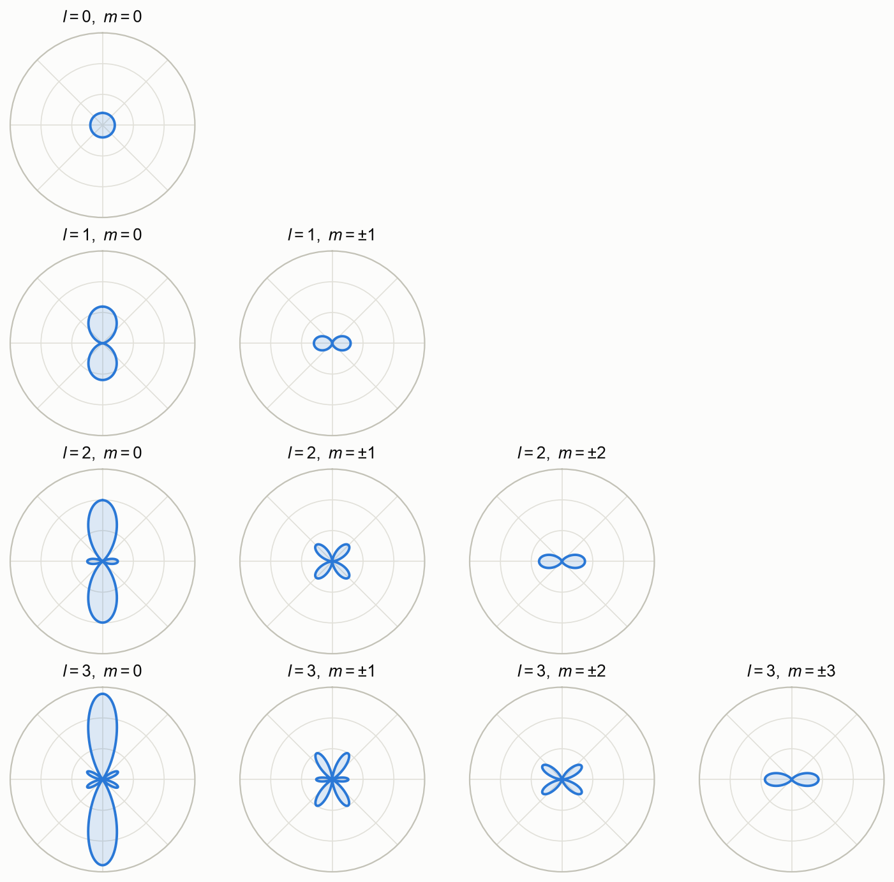
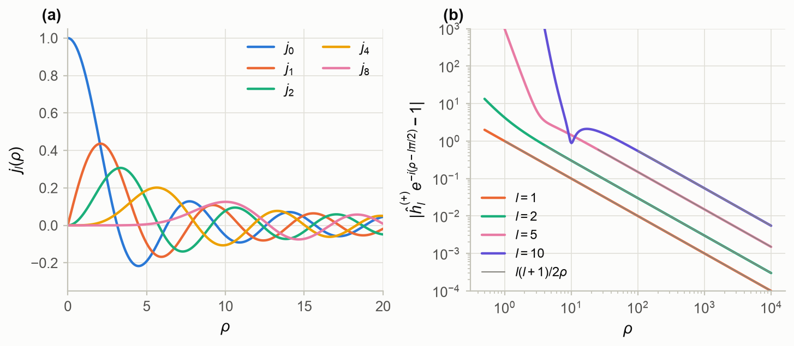
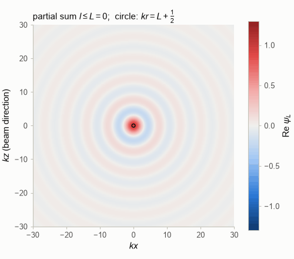
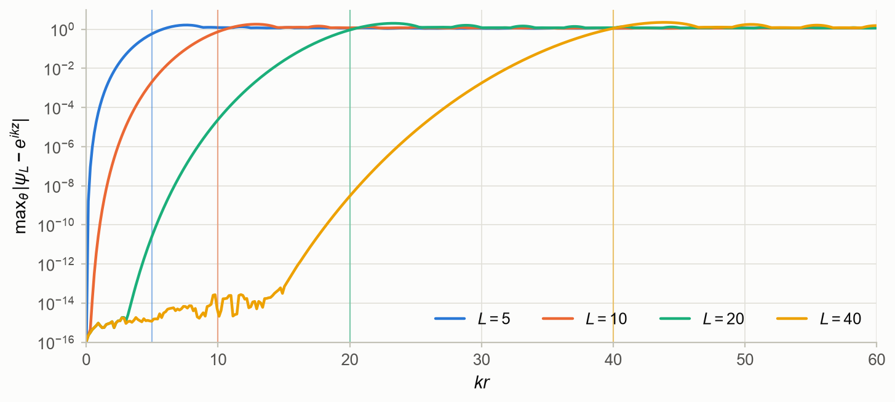
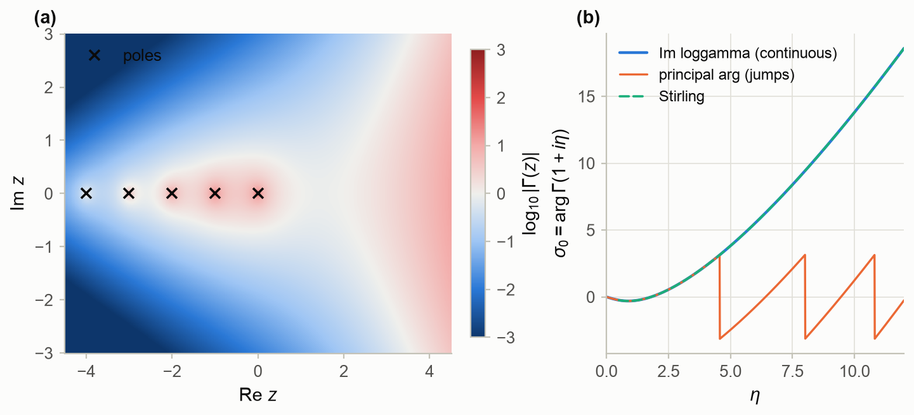
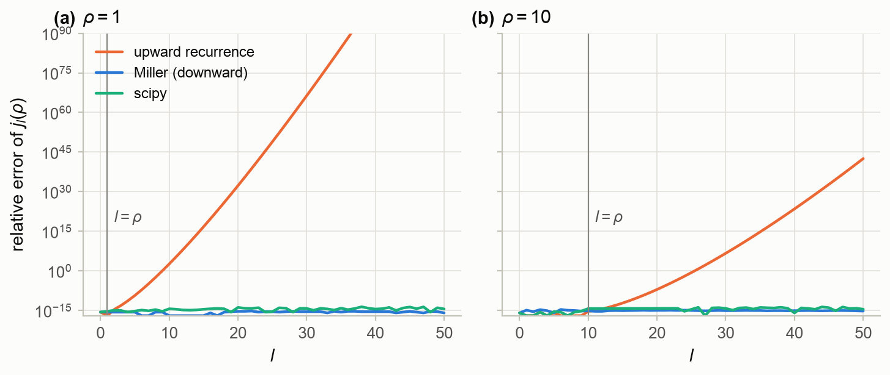
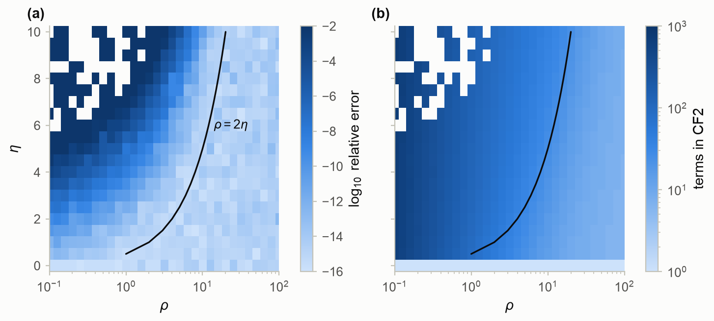

Learning goals. After this chapter you should be able to
separate the Schrödinger equation in spherical coordinates and explain why angular momentum is
quantized;
use Legendre polynomials and spherical harmonics: recurrences, orthogonality, parity, the
addition theorem and the large-l asymptotic form;
work with the spherical Bessel, Neumann and Hankel functions and their Riccati forms, and know
when their asymptotic forms may be used;
expand a plane wave in partial waves and estimate how many terms are needed;
handle the Gamma function of complex argument and compute the Coulomb phase shift safely;
recognise Coulomb wave functions as confluent hypergeometric functions, with their logarithmic
phase, turning point and penetration factor;
know where Airy and cylindrical Bessel functions appear in scattering;
evaluate all of these stably: recurrence direction, Miller’s algorithm, continued fractions and
Steed’s method.
Prerequisites: calculus with series and ordinary differential equations, complex numbers, and
separation of variables for the hydrogen atom.
Sources: C&H §2.1 and §3.2–3.4; the NIST Digital Library of Mathematical Functions (DLMF),
chapters 5, 9, 10, 13, 14 and 33; Barnett (1981) for Steed’s method. Longer derivations are collected
in the section Detailed derivation at the end of the chapter.
How to read this chapter. Every scattering calculation in these notes is built from the
functions below. You do not need to memorize the formulas, but you should know what each function
looks like, which limits it obeys, and how a computer evaluates it reliably. The notebook checks
every identity quoted here numerically.
M1.1 Separation of variables in spherical coordinates
M0 treated scattering on a line. Real collisions happen in three dimensions, but when the potential V(r) depends only on the distance between the two particles, the problem is spherically symmetric
and spherical coordinates (r,θ,ϕ) are the natural choice. In them the Laplacian reads
The first term acts only on r. The other two act only on the angles, and they have a meaning of their
own: writing the angular-momentum operator L=−iℏr×∇ in spherical
coordinates (the standard calculation done for the hydrogen atom) gives
L2=−ℏ2[sinθ1∂θ∂(sinθ∂θ∂)+sin2θ1∂ϕ2∂2],(M1.2)
so the angular part of ∇2 is exactly −L2/(ℏ2r2). The Schrödinger equation for a
central potential,
−2μℏ2[r21∂r∂(r2∂r∂ψ)−ℏ2r2L2ψ]+V(r)ψ=Eψ,
therefore separates. We try ψ=R(r)Θ(θ)Φ(ϕ) and multiply by r2/(RΘΦ).
All terms that depend on r then stand on one side and all terms that depend on the angles on the
other. A function of r can equal a function of θ and ϕ for all values of the variables
only if both are the same constant; we call it λ, so that L2(ΘΦ)=λℏ2ΘΦ.
The angular equation separates once more. In (M1.2) the dependence on ϕ enters only through the
second derivative, so Φ′′=−m2Φ with a second constant, and Φ=eimϕ. Since ϕ and ϕ+2π describe the same point, ψ must not change when ϕ increases by 2π, and this
forces m to be an integer. What remains is an equation for Θ. With x=cosθ, so that d/dθ=−sinθd/dx and sinθ1dθd(sinθdθdΘ)=dxd[(1−x2)dxdΘ],
it becomes the associated Legendre equation
(1−x2)Θ′′−2xΘ′+[λ−1−x2m2]Θ=0,(M1.3)
where λ is the separation constant.
Not every value of λ is allowed, and this is where angular momentum becomes quantized. Take m=0 and try a power series Θ=∑kakxk. Inserting it into (M1.3) and collecting the
coefficient of xk gives (k+2)(k+1)ak+2=[k(k+1)−λ]ak, that is
ak+2=(k+1)(k+2)k(k+1)−λak,
which links even coefficients with even ones and odd with odd. For large k the ratio ak+2/ak tends to 1, more precisely to 1−2/k, so the coefficients fall off only like 1/k:
an infinite series behaves like ∑xk/k and diverges logarithmically at x=±1, the poles of
the sphere. A physically acceptable solution must therefore terminate. That happens only if λ=l(l+1) with an integer l≥0: then al+2=0, the series that contains xl stops
at that power, and the other series must be discarded. The solution is a polynomial of degree l, the
Legendre polynomial Pl. So the quantization of angular momentum is the requirement that the wave
function be finite on the whole sphere. For m=0 the same eigenvalues appear, with the extra
condition ∣m∣≤l (§M1.2).
The radial part leads to the radial equation of Chapter 2. The identity r21drd(r2drdR)=r1dr2d2(rR) suggests the
function u=rR, which obeys
u′′+[k2−U(r)−r2l(l+1)]u=0,(M1.4)
with k2=2μE/ℏ2 and U=2μV/ℏ2. Every scattering calculation in these notes is done
in this form. For a free particle (U=0) it is convenient to keep R and to measure distances in
units of 1/k, ρ=kr. Then R obeys the spherical Bessel equation
ρ2R′′+2ρR′+[ρ2−l(l+1)]R=0,(M1.5)
whose solutions are the subject of §M1.3.
M1.2 Legendre polynomials and spherical harmonics
Section M1.1 showed that the angular solutions with m=0 are polynomials, but building them
coefficient by coefficient from the recursion is clumsy. Rodrigues’ formula produces them all at once:
That these polynomials solve Legendre’s equation follows from the simple identity (x2−1)w′=2lxw for w=(x2−1)l: differentiated l+1 times, it becomes Legendre’s
equation for w(l) (derivation D.1). The prefactor 1/(2ll!) makes Pl(1)=1.
A second, more physical route leads to the same polynomials and gives much more. The function 1/∣r−z^∣ is the electrostatic potential of a unit charge placed on the z
axis at unit distance from the origin. Away from the charge it satisfies Laplace’s equation, and it is
symmetric about the z axis. Separating Laplace’s equation as in §M1.1 (with E=V=0) gives the
radial solutions rl and r−l−1, so inside the unit sphere the potential must be a sum ∑lclrlPl(cosθ) of solutions that are regular at the origin. On the z axis, where
every Pl equals 1, the potential is 1/(1−r)=∑lrl, so all cl=1. Since ∣r−z^∣=1−2rcosθ+r2, we have found the generating
function
1−2xt+t21=l=0∑∞Pl(x)tl(∣t∣<1)(M1.7)
with t=r and x=cosθ. For two arbitrary points, ∣r−r′∣=r>1−2xt+t2
with t=r</r> and x the cosine of the angle between them, so (M1.7) is also the multipole
expansion of 1/∣r−r′∣, the expansion that defines the multipole moments of a
charge distribution, such as the quadrupole moments of deformed nuclei (Chapter 9).
The generating function stores the properties of the polynomials in compact form. Call its left side g(x,t). Differentiating with respect to t gives (1−2xt+t2)∂g/∂t=(x−t)g.
Inserting the series on both sides and comparing the coefficients of tl, (l+1)Pl+1−2xlPl+(l−1)Pl−1=xPl−Pl−1, which is Bonnet’s recurrence
(l+1)Pl+1(x)=(2l+1)xPl(x)−lPl−1(x),(M1.8)
the most efficient way to compute Pl numerically. Setting x=1 gives g=1/(1−t), so Pl(1)=1; and since g(−x,−t)=g(x,t), the parity is Pl(−x)=(−1)lPl(x).
The polynomials are also orthogonal on [−1,1]:
∫−11Pl(x)Pl′(x)dx=2l+12δll′.(M1.9)
For l=l′ this follows from the differential equation alone. Write Legendre’s equation as [(1−x2)Pl′]′=−l(l+1)Pl, multiply it by Pl′, subtract the same equation with l and l′
exchanged, and integrate over [−1,1]. The derivative terms combine into [(1−x2)(Pl′Pl′−PlPl′′)]−11, which vanishes because 1−x2=0 at both ends,
and what remains is [l(l+1)−l′(l′+1)]∫PlPl′dx=0. The normalization comes from the
generating function. By orthogonality, ∫g2dx=∑lt2l∫Pl2dx, while the integral
can also be done directly:
∫−111−2xt+t2dx=t1ln1−t1+t=l=0∑∞2l+12t2l.
Comparing powers of t gives ∫Pl2dx=2/(2l+1). Orthogonality also explains why Pl has l
zeros in (−1,1). If it changed sign at fewer points, the polynomial of lower degree that changes
sign at exactly those points would have a non-zero integral against Pl, contradicting
orthogonality.
For large l, away from the poles, Pl is a slowly modulated cosine:
The reason is visible in the equation. Writing Pl=u/sinθ removes the first-derivative
term from Legendre’s equation and leaves u′′+[(l+21)2+1/(4sin2θ)]u=0. For
large l, and away from the poles, the second term in the bracket is negligible, so u oscillates as sin[(l+21)θ+α] with a constant amplitude: the effective wave number in θ is l+21, not l. The amplitude and the phase α=π/4 follow from matching to the
behaviour near the pole, where Pl(cosθ)≈J0((l+21)θ) (derivation
D.2). This form, valid when lθ≫1 and l(π−θ)≫1, is the starting point of the
semiclassical theory of Chapter 5. At l=20 it is already accurate to 0.005 (Fig. M1.1(b)).

Figure M1.1. (a) The first six Legendre polynomials. (b) P20(cosθ) and its asymptotic
form (M1.10). (Notebook §M1.2.)
The polynomials Pl describe the states with m=0, which are symmetric about the z axis. For m=0, differentiating Legendre’s equation m times shows that the associated Legendre functions Plm(x)=(−1)m(1−x2)m/2dxmdmPl(x) solve (M1.3) with λ=l(l+1)
(derivation D.1). For m>l the mth derivative of a polynomial of degree l vanishes, which is why 0≤m≤l. The factor (−1)m is the Condon–Shortley phase. Combined with eimϕ and
normalized, they give the spherical harmonics
The normalization factor in (M1.11) combines the 2π of the ϕ integral with ∫−11(Plm)2dx=2l+12(l−m)!(l+m)!, which reduces to (M1.9) for m=0.
Orthogonality in m comes from the ϕ integral, and orthogonality in l from the same
Sturm–Liouville argument as for the Pl.
Three properties are used constantly. Under parity, r^→−r^ means θ→π−θ
and ϕ→ϕ+π. Then x→−x, which multiplies Plm by (−1)l+m, while eim(ϕ+π)=(−1)meimϕ, so altogether Ylm(−r^)=(−1)lYlm(r^). For m=0, Yl0=(2l+1)/4πPl(cosθ). And the addition theorem holds:
The addition theorem is a statement about rotations. As a function of r^2, Pl(r^1⋅r^2)
is, up to normalization, the harmonic Yl0 in a coordinate system whose z axis points along r^1. A rotation of the axes does not change L2, so it mixes the 2l+1 harmonics of a
given l only among themselves, and Pl(r^1⋅r^2) must be a combination ∑mcmYlm(r^2) in the original axes. Projecting onto each Ylm gives cm=2l+14πYlm∗(r^1) (derivation D.3). We use the theorem in §M1.4 to expand a plane
wave travelling in any direction; M2 uses it to sum the partial-wave expansion of the Green’s function,
and M3 to relate rotation matrices to spherical harmonics. The notebook checks (M1.9), (M1.12) and
(M1.13) to better than 10−12. Completeness is what makes the partial-wave expansion exact: any
angular distribution can be expanded in Ylm.

Figure M1.2.∣Ylm∣2 in the x–z plane for l≤3 (the z axis points up; ∣Yl,−m∣2=∣Ylm∣2). Each harmonic has l−m nodal cones; larger ∣m∣ concentrates the
probability towards the equator. (Notebook §M1.2.)
M1.3 Spherical Bessel, Neumann and Hankel functions
We now turn to the radial equation of a free particle, (M1.5). For l=0 it is easy: with R=u/ρ it becomes u′′+u=0, so u=sinρ or cosρ, and the two solutions are sinρ/ρ, which is finite at the origin, and cosρ/ρ, which diverges there. For general l the two solutions are the spherical Bessel functionjl (regular at the origin) and the spherical Neumann functionnl (singular). The lowest ones are
Higher orders can be generated from l=0 by a ladder operator, much as the excited states of the
harmonic oscillator are generated by a raising operator. If fl solves (M1.5), then
fl+1=−fl′+ρlfl=−ρldρd(ρ−lfl)
solves it for l+1 (derivation D.4). The second form shows that fl+1/ρl+1 is −ρ−1d/dρ applied to fl/ρl. Applied l times to sinρ/ρ and cosρ/ρ,
this gives Rayleigh’s formulas
Sign convention. As in C&H and Messiah, n0=+cosρ/ρ. Many books and scipy.special.spherical_yn use the opposite sign: nl=−yl.
The raising relation has a partner that lowers l, fl−1=fl′+ρl+1fl. Adding the
two relations eliminates the derivative. Multiplying the lowering relation by l, the raising
relation by l+1 and subtracting eliminates fl/ρ instead. The results are the recurrences
satisfied by both jl and nl (written fl below):
The behaviour at small and large ρ can be read off from Rayleigh’s formulas. Near the origin, the
operator (ρ−1d/dρ)l annihilates every power ρ2s with s<l in the Taylor series of sinρ/ρ, so the first surviving term of jl is proportional to ρl; for nl, the most
singular term 1/ρ of cosρ/ρ turns into a multiple of ρ−l−1. Far away, the term that
falls off most slowly is the one in which every derivative acts on the sine or cosine, and each
derivative shifts the phase by π/2. Working out the constants (derivation D.4) gives the limits
The small-ρ forms imply that nl/jl≈(2l−1)!!(2l+1)!!/ρ2l+1, a ratio that will
decide the stability of recurrences in §M1.8. The functions are related to the ordinary Bessel
functions of half-integer order by jl(ρ)=π/2ρJl+1/2(ρ).
The factor ρl near the origin has a simple physical meaning. In the radial equation the
centrifugal term l(l+1)/ρ2 exceeds the “kinetic” term 1 for ρ<l(l+1)≈l+21,
so this region is classically forbidden, and the regular solution only creeps up there like ρl
(Fig. M1.3(a)). Classically, a particle with momentum ℏk and angular momentum ℏl passes
the origin at the impact parameter b=l/k and never comes closer. Partial wave l therefore probes
only distances r≳l/k, a fact that will tell us in §M1.4 how many partial waves are needed.
In scattering we mostly use the Riccati forms j^l=ρjl and n^l=ρnl, and their
combinations h^l(±)=n^l±ij^l, because these solve the radial equation in the
form (M1.4), u′′+[1−l(l+1)/ρ2]u=0, which has no first-derivative term. For such an equation
the Wronskian of two solutions is constant (its derivative is u1u2′′−u1′′u2=0), so it can be
evaluated anywhere. At large ρ, (M1.17) gives j^l→sin(ρ−lπ/2) and n^l→cos(ρ−lπ/2), and therefore j^l′n^l−j^ln^l′=1 (the notebook
confirms this to 12 digits). The combinations h^l(±) behave as e±i(ρ−lπ/2) far
away: they are the outgoing and incoming waves of partial wave l, which carry the S-matrix in
Chapter 2. Remarkably, the Hankel functions have an exact, finite expansion:
To see why the series is finite, write h^l(+)=eiρw(ρ). The radial equation becomes w′′+2iw′−l(l+1)w/ρ2=0, and a series w=∑kakρ−k solves it if ak+1=i[l(l+1)−k(k+1)]ak/[2(k+1)]. The factor l(l+1)−k(k+1) vanishes at k=l, so the
series stops after l+1 terms; solving the recursion gives the coefficients of (M1.18) (derivation
D.5).
The leading correction to the asymptotic form is therefore l(l+1)/2ρ, which Fig. M1.3(b) shows
directly. In practice this means that replacing j^l and n^l by their sine and cosine forms
at a matching radius r is accurate only if kr≫l2. With exact functions, which is what scatlib
uses, there is no such restriction.

Figure M1.3. (a) Spherical Bessel functions: jl stays near zero until ρ≈l, the
centrifugal barrier. (b) Deviation of h^l(+) from its asymptotic form, with the leading
estimate l(l+1)/2ρ (grey). (Notebook §M1.3.)
M1.4 The plane-wave expansion
The incident beam of a scattering experiment is a plane wave, while the solutions we know how to
construct are partial waves of definite l. To combine the two we need the plane wave written as a
sum of partial waves. This expansion is due to Rayleigh:
To derive it, note that eikz solves the free Schrödinger equation (∇2+k2)ψ=0 and is
regular at the origin. It is symmetric about the z axis, so it can be expanded in Legendre
polynomials, eikz=∑lRl(r)Pl(cosθ). Inserting this into the free equation and using L2Pl=l(l+1)ℏ2Pl shows that each coefficient Rl satisfies the free radial equation
(M1.5). It must also be regular at the origin, so Rl=Aljl(kr). To find Al, compare the terms
proportional to (krcosθ)l at small kr, that is, the highest power of cosθ that
accompanies (kr)l. On the left, the Taylor series of the exponential gives (ikrcosθ)l/l!. On the right, only the term with index l contains (cosθ)l together
with (kr)l: the lower terms contain polynomials Pl′ of lower degree, and the higher terms start
with higher powers of kr. That term contributes the leading power of jl from (M1.17) times the
leading coefficient (2l)!/(2ll!2) of Pl, which can be read off from Rodrigues’ formula.
Equating the two sides,
l!il=Al(2l+1)!!12ll!2(2l)!,
and with (2l)!=2ll!(2l−1)!! this gives Al=il(2l+1)!!/(2l−1)!!=il(2l+1).
For a wave travelling along an arbitrary direction k^, the polynomial Pl(cosθ) in (M1.19)
becomes Pl(k^⋅r^), and the addition theorem (M1.13) splits it into harmonics of the two
directions:
eik⋅r=4πl,m∑iljl(kr)Ylm∗(k^)Ylm(r^).(M1.20)
Conversely, multiplying (M1.19) by Pl(x), with x=cosθ, integrating over x and using the
orthogonality (M1.9) isolates a single term and gives an integral representation of jl:
jl(kr)=2il1∫−11eikrxPl(x)dx.(M1.21)
In practice the sum must be truncated, and the question is where. We saw in §M1.3 that partial wave l does not reach radii smaller than about l/k, so jl(kr) is negligible for l≳kr, and a
sum truncated at L reproduces the plane wave only inside a sphere of radius r≈L/k.
Animation M1.1 shows this directly. Figure M1.4 makes it quantitative: an accuracy of 10−3 is
reached out to kr=1.5, 4.7, 12.3 and 29.5 for L=5, 10, 20 and 40. In other words L≈kr+3(kr)1/3. The extra term is the width of the transition region of jl near l≈kr: close to its turning point a Bessel function behaves like the Airy function of §M1.7,
on a scale that grows as the cube root of the order. This is the quantitative version of the rule lmax≈kR of Chapter 2.

Animation M1.1. Real part of the partial sum of (M1.19) up to l=L in the x–z plane (beam
along z, upwards). The circle has radius kr=L+21: the plane wave is reproduced inside it. (Notebook §M1.4.)

Figure M1.4. Largest error over all angles of the partial sum up to L, against kr; vertical
lines at kr=L. (Notebook §M1.4.)
M1.5 The Gamma function
Coulomb functions, which we need for every reaction between charged nuclei, contain the factorial of a
complex number. The Gamma function provides it. Euler’s integral defines
The recurrence follows from an integration by parts, ∫0∞tze−tdt=[−tze−t]0∞+z∫0∞tz−1e−tdt, in which the
boundary terms vanish. With Γ(1)=1 it gives Γ(n+1)=n!, and the substitution t=s2
turns Γ(21) into the Gaussian integral 2∫0∞e−s2ds=π.
The recurrence also takes Γ beyond the half-plane Rez>0. Written as Γ(z)=Γ(z+n+1)/[z(z+1)⋯(z+n)], it defines Γ for Rez>−n−1, and
it shows simple poles at z=0,−1,−2,…, where one factor of the denominator vanishes. Near z=−n the numerator tends to Γ(1)=1 and the other factors give (−n)(−n+1)⋯(−1)=(−1)nn!, so the residue there is (−1)n/n!, as Fig. M1.5(a) shows.
Two identities matter for scattering. The first is the reflection formula Γ(z)Γ(1−z)=π/sinπz, which is proved by a contour integral of the kind discussed in
M2 §M2.4 (DLMF 5.5.3). It gives the modulus of Γ on the line Rez=1. Since Γ(z∗)=Γ(z)∗, we have ∣Γ(1+iη)∣2=Γ(1+iη)Γ(1−iη), and with Γ(1+iη)=iηΓ(iη) the reflection formula gives iηπ/sin(iπη). Because sin(iπη)=isinhπη,
∣Γ(1+iη)∣2=sinhπηπη,(M1.23)
which controls the strength of Coulomb wave functions near the origin (§M1.6). The second identity
describes large arguments. For large ∣z∣, the integrand tze−t=ezlnt−t of Γ(z+1) has a sharp maximum at t=z, where the exponent is zlnz−z and its second
derivative is −1/z. Replacing the integrand by a Gaussian around the maximum gives Γ(z+1)≈2πzzze−z. Taking the logarithm and using lnΓ(z)=lnΓ(z+1)−lnz produces the first three terms of Stirling’s series
The higher terms come from the corrections to the Gaussian approximation. The series is accurate for ∣z∣≳2 away from the negative real axis.
We will meet Γ of complex argument above all through the Coulomb phase shifts, the phases that a
Coulomb field adds to each partial wave (Chapter 3; §M1.6 shows where they come from):
σl=argΓ(l+1+iη),σl+1=σl+arctanl+1η.(M1.25)
The recurrence follows from Γ(l+2+iη)=(l+1+iη)Γ(l+1+iη), because
arguments add when complex numbers are multiplied, and arg(l+1+iη)=arctan[η/(l+1)].
There is a trap in computing these phases. The principal value of the argument of a complex number
lies in (−π,π]. Computing σ0 as np.angle(gamma(1 + 1j*eta)) therefore produces jumps of 2π (Fig. M1.5(b)), and Γ itself under- or overflows for large arguments. The safe route is the
imaginary part of scipy.special.loggamma, which is continuous. For example, σ0=3.816 at η=5 and 13.80 at η=10. Equally safe are Stirling’s series and the recurrence in (M1.25).

Figure M1.5. (a) log10∣Γ(z)∣ in the complex plane, with its poles. (b) The Coulomb phase σ0=argΓ(1+iη): continuous (Im loggamma), principal value (jumps) and Stirling’s
series. (Notebook §M1.5.)
M1.6 Confluent hypergeometric and Coulomb wave functions
The free solutions of §M1.3 are elementary functions. Nuclei, however, are charged, and the Coulomb
potential between them changes the radial equation at every distance, because 1/r falls off too
slowly to be neglected anywhere. The solutions of the Coulomb problem are confluent hypergeometric
functions, so we introduce these first. They solve Kummer’s equation
zw′′+(b−z)w′−aw=0.(M1.26)
The origin is a regular singular point of this equation, so we can look for a solution as a power
series, w=∑ncnzn. Inserting it and collecting the coefficient of zn gives (n+1)(n+b)cn+1=(n+a)cn. With c0=1 this produces the solution regular at the origin,
Kummer’s function
and a second solution U(a,b,z) that decays at infinity. The Whittaker functions Mκ,μ and Wκ,μ are the same functions in another normalization.
Now the Coulomb problem itself. Inserting U=2μZ1Z2e2/(ℏ2r) into (M1.4) and dividing by k2, the radial equation in a Coulomb field becomes, with ρ=kr and the Sommerfeld parameter η=Z1Z2e2μ/ℏ2k=Z1Z2e2/ℏv,
u′′+[1−ρ2η−ρ2l(l+1)]u=0.(M1.28)
The parameter η measures the strength of the Coulomb field: at the distance r=1/k the Coulomb
energy is 2η times the kinetic energy. To solve the equation, we take out the behaviour that we
already know at both ends. Near the origin the centrifugal term dominates and the regular solution
goes as ρl+1; far away the solutions oscillate as e±iρ. The substitution u=ρl+1e−iρw(2iρ) indeed turns (M1.28) into Kummer’s equation with a=l+1−iη
and b=2l+2 (derivation D.6). The regular Coulomb function is therefore
The constant Cl is fixed by requiring that Fl oscillate with unit amplitude far away, like j^l; finding it requires the asymptotic form of M, which is worked out in derivation D.6. The
notebook confirms (M1.29) against mpmath’s coulombf to twelve digits. The irregular function Gl
completes the pair, and Hl(±)=Gl±iFl are the Coulomb analogues of h^l(±). For η=0 they reduce exactly to j^l, n^l and h^l(±).
The long range of the Coulomb force leaves a permanent mark on the solutions far away. A simple
estimate shows what to expect. At large ρ the local wave number of (M1.28) is 1−2η/ρ≈1−η/ρ, and the phase of a slowly varying wave grows as the
integral of the local wave number, ∫(1−η/ρ)dρ=ρ−ηlnρ+const. The
exact asymptotic form, obtained in derivation D.6 together with Cl, confirms this and fixes the
constant:
Closer in, the Coulomb barrier makes itself felt. The effective “kinetic energy” in (M1.28), the
bracket 1−2η/ρ−l(l+1)/ρ2, vanishes where ρ2−2ηρ−l(l+1)=0, that is, at the
turning point
ρt=η+η2+l(l+1),(M1.31)
which is 2η for l=0. Inside it, Fl is exponentially small and Gl exponentially large
(Fig. M1.6(a, b) and Animation M1.2). Near the origin M≈1, so F0≈C0ρ, while a
free s wave behaves as sinρ≈ρ. The ratio C02 therefore measures the probability of
finding the particle at the origin relative to a free particle. By (M1.23), C02=e−πη∣Γ(1+iη)∣2=πηe−πη/sinhπη, that is
C02(η)=e2πη−12πηη≫12πηe−2πη,(M1.32)
the Gamow–Sommerfeld penetration factor: C02=1.2×10−2 at η=1 and 1.2×10−7 at η=3. The factor e−2πη is the Gamow factor of M0 (§M0.4.3) for a
pure Coulomb barrier. It also explains why charged-particle reactions in stars are written as σ(E)=S(E)e−2πη/E with a smooth astrophysical S-factor (Chapter 13).
Animation M1.2.F0 and G0 as η grows from 0 to 5. The forbidden region ρ<2η
(grey) widens: F0 is pushed out and suppressed by C0(η), while G0 grows inside. (Notebook §M1.6.)
M1.7 Airy and cylindrical Bessel functions
Two more families of functions appear in later chapters, each tied to a particular physical situation.
The first arises at classical turning points, where the WKB approximation of Chapter 5 breaks down.
Near a turning point xt, any smooth potential is approximately linear, V(x)≈E+F(x−xt),
with F>0 if the forbidden region lies at x>xt. The Schrödinger equation −(ℏ2/2m)ψ′′+F(x−xt)ψ=0 then contains only one length scale, (ℏ2/2mF)1/3, and measuring distances in this unit, z=(2mF/ℏ2)1/3(x−xt), turns it
into the Airy equation
dz2d2w=zw.(M1.33)
Its solution that decays in the forbidden region z>0 is Ai; the other one, Bi,
grows. Far from the turning point the solutions behave like WKB waves. For z>0 the local decay
constant is z, so Ai falls off as exp(−∫zdz)=e−32z3/2, with the
WKB amplitude factor z−1/4; for z<0 it oscillates. The precise constants follow from an
integral representation of Ai by the method of stationary phase (derivation D.7). With ξ=32∣z∣3/2,
So a decaying exponential on one side of a turning point continues as a sine with phase π/4 on the
other. This is the WKB connection formula of Chapter 5. The same function, with a different argument,
describes the intensity near a rainbow angle (Chapter 5) and the falloff of nuclear rainbows
(Chapter 7).
The second family, the cylindrical Bessel functions J0 and J1, appears whenever a plane wave is
integrated around a circle, since J0(x)=2π1∫02πeixcosϕdϕ. At high
energies the scattering is concentrated at small angles, and the amplitude can be written as an
integral over the plane of impact parameters perpendicular to the beam; the integral over the azimuth
in that plane produces J0. The eikonal amplitude of Chapter 5 is therefore a Hankel transform, f∝∫bdbJ0(qb)[…]. The simplest example is Fraunhofer diffraction by a black disk
of radius R (Chapter 7). The disk removes the incident wave over its area, and the scattered
amplitude at momentum transfer q≈kθ is proportional to ∫diske−iq⋅bd2b=2π∫0RJ0(qb)bdb=2πRJ1(qR)/q,
where the last step uses d[xJ1(x)]/dx=xJ0(x). Relative to its forward value πR2, the
amplitude is 2J1(x)/x, and the cross section is
All these functions must eventually be computed, often for hundreds of partial waves and at many
energies. Two libraries cover almost everything in these notes. scipy.special is fast, works in
double precision and mostly takes real parameters. mpmath works in arbitrary precision and takes
complex parameters, but is slow, so it serves as the reference. The real art lies in two techniques
that both libraries use internally: choosing the direction of a recurrence, and continued fractions.
M1.8.1 The direction of a recurrence
The recurrences (M1.16) are the cheapest way to obtain jl for all l at once, but they hide a trap.
The three-term recurrence fl+1=ρ2l+1fl−fl−1 is satisfied by jland by nl. For l>ρ, jl decreases with l and nl grows: jl is the minimal solution and nl
the dominant one. If jl is computed upwards from j0 and j1, each rounding error mixes in a
little nl, and that admixture grows relative to jl in proportion to nl/jl. By §M1.3 this ratio
is (2l−1)!!(2l+1)!!/ρ2l+1 when ρ is small compared with l. At ρ=1 it is about 1019 at l=10 and 4×1048 at l=20, so rounding errors of order 10−16 end up far
larger than the function itself. Figure M1.8 shows the result. At ρ=1 the upward recurrence is
wrong by a factor 4×102 at l=10 and by 1032 at l=20; at ρ=10 the trouble
starts once l exceeds 10.
Miller’s algorithm turns this around. Start at some N well beyond both l and ρ with
arbitrary values (say fN+1=0, fN=10−300) and run the recurrence downwards. In that
direction jl is the dominant solution: as l decreases, jl grows and nl shrinks, so whatever
admixture of nl the arbitrary starting values contain dies out. Finally rescale everything with the
known value j0=sinρ/ρ. The errors stay at 10−15 for every l. The general rule (see
Gautschi 1967) is
Run a recurrence in the direction in which the wanted solution grows.
For Coulomb functions, Fl decreases with l inside the turning points and Gl increases. So Fl
is computed downwards and Gl upwards.

Figure M1.8. Relative error of jl(ρ) from the upward recurrence, Miller’s downward
recurrence, and scipy, against mpmath, for (a) ρ=1 and (b) ρ=10. (Notebook §M1.8.)
M1.8.2 Continued fractions and Steed’s method
Miller’s algorithm needs a normalization at the end, and for Coulomb functions there is no simple
value, like j0=sinρ/ρ, to normalize with. Steed’s method takes the normalization from the
Wronskian instead, and the starting values from continued fractions. Write the recurrences of the
Coulomb functions with Sk=k/ρ+η/k and Rk=1+η2/k2:
Here u stands for F or G, and primes denote d/dρ; for η=0 these are the lowering and
raising relations of §M1.3, written for the Riccati functions. Let fl=Fl′/Fl be the logarithmic
derivative. The upward relations give Fl+1/Fl=(Sl+1−fl)/Rl+1 and fl+1=Rl+1Fl/Fl+1−Sl+1, and eliminating Fl+1/Fl between them gives fl=Sl+1−Rl+12/(Sl+1+fl+1). Applying the same relation to fl+1, then to fl+2, and so on, produces a continued fraction for the logarithmic derivative, with Tk=Sk+Sk+1:
It converges to the logarithmic derivative of F, not of G, because Fl is the minimal solution of
the recurrence for increasing l (a theorem of Pincherle; compare §M1.8.1). A second continued
fraction, derived from the asymptotic series of H0(+), gives the logarithmic derivative of the
outgoing Coulomb wave:
Steed’s method (Barnett et al. 1974; Barnett 1981) combines them:
evaluate CF1 at an order L inside its turning point, where FL>0;
recur downwards to get all Fl, Fl′ up to one common factor;
evaluate CF2 at l=0;
fix the common factor with the Wronskian. Writing H0(+)=G0+iF0, CF2 says G0′+iF0′=(p+iq)(G0+iF0), that is G0′=pG0−qF0 and F0′=pF0+qG0. Inserted
into F′G−FG′=1, these give q(F02+G02)=1. With γ=(F0′/F0−p)/q=G0/F0, this
fixes F0=±[q(1+γ2)]−1/2, and then G0=γF0 and G0′=pG0−qF0;
recur upwards for Gl, Gl′.
scatlib.special.coulomb_steed implements exactly these steps, using the modified Lentz algorithm for
the continued fractions. It reproduces mpmath to 10−10 or better wherever it is meant to work. For
all l≤100 at η=3, ρ=25 it takes 0.19 ms against 1.5 s for mpmath, a factor of 7700.
Chapters 3 and 7 need Coulomb functions for hundreds of partial waves at every energy, so this
matters.
Steed’s method has one weak spot. Deep inside the Coulomb barrier (ρ≪2η), q=1/(F02+G02) is tiny, and it comes out of CF2 as a small difference between numbers of order
one. Digits are lost, and on the grid of Fig. M1.9 the normalization fails outright at 45 of 651
points, all far inside the barrier. coulomb_steed estimates this loss and refuses when the error would
exceed 10−10. The wrapper coulomb_fg then switches to mpmath, which is slow but reliable there.
Production codes switch to other methods, such as power series, in this region.

Figure M1.9. Steed’s method for F0, G0 over 0.1≤ρ≤100, 0≤η≤10.
(a) Relative error against mpmath; white cells: normalization failed. (b) Number of terms needed by
CF2. The black line is the turning point ρ=2η. (Notebook §M1.8.)
M1.8.3 How to trust a special-function routine
A routine that returns plausible numbers is not necessarily right, so every special-function routine
should be checked against information it did not use. Three kinds are available: identities that must
hold exactly, such as Wronskians, recurrences and the addition theorem; known limits, such as small
and large arguments and the reduction of Fl to j^l at η=0; and an independent
high-precision reference, such as mpmath or the DLMF tables. The test suite of scatlib uses all
three for every function in these notes.
Summary
Separating the Schrödinger equation in spherical coordinates reduces a central-force problem to
angular and radial equations, and the requirement that the wave function be finite on the whole sphere
quantizes the separation constant to l(l+1). The angular solutions are the Legendre polynomials and
the spherical harmonics. A single generating function, the potential of a point charge, supplies their
recurrence, orthogonality, parity and normalization; the addition theorem expresses the fact that
rotations mix the harmonics of one l only among themselves; and for large l the polynomials become
modulated cosines with the effective wave number l+21. The free radial solutions jl and nl,
and their Riccati and Hankel forms, follow from sinρ and cosρ by a ladder operator. They stay
small inside ρ≈l, where the centrifugal barrier keeps partial wave l away, and approach
their asymptotic forms with a correction l(l+1)/2ρ; Rayleigh’s expansion of a plane wave in these
partial waves therefore converges once L exceeds kr by a transition width, L≈kr+3(kr)1/3. The Gamma function supplies the factorials of complex numbers that the
Coulomb problem needs. Its reflection formula gives ∣Γ(1+iη)∣2=πη/sinhπη, and the
Coulomb phases σl=argΓ(l+1+iη) must be computed from ImlnΓ,
never from a principal-value argument. Coulomb functions are confluent hypergeometric functions: their
phase grows as ηln2ρ without limit, because the force never stops acting, and their penetration
factor C02≈2πηe−2πη is the Gamow factor of M0. Airy functions describe turning
points and rainbows, and J0 and J1 describe eikonal amplitudes and diffraction. Computing all of
this reliably rests on two ideas: a recurrence must run in the direction in which the wanted solution
grows, and Steed’s method combines two continued fractions, the recurrences and a Wronskian into an
algorithm that is fast and accurate everywhere except deep inside the Coulomb barrier.
Things to try in the notebook
Repeat Fig. M1.4 for kr up to 200. Does L≈kr+3(kr)1/3 still hold?
Compute σl for l=0…50 at η=20 with the recurrence (M1.25), and compare
with loggamma.
Use Miller’s algorithm with too small a starting order N (say N=lmax). How does the error
depend on N−ρ?
Time coulomb_steed against coulomb_wave for lmax=500 at η=20, ρ=100, the
regime of a heavy-ion collision.
References
F. W. J. Olver et al. (eds.), NIST Digital Library of Mathematical Functions, https://dlmf.nist.gov,
chapters 5, 9, 10, 13, 14 and 33.
M. Abramowitz and I. A. Stegun, Handbook of Mathematical Functions (National Bureau of Standards,
1964), chapters 6, 10, 13 and 14.
L. F. Canto and M. S. Hussein, Scattering Theory of Molecules, Atoms and Nuclei (World Scientific,
2013), §2.1 and §3.2–3.4.
A. R. Barnett, D. H. Feng, J. W. Steed and L. J. B. Goldfarb, Comput. Phys. Commun. 8, 377 (1974).
A. R. Barnett, Comput. Phys. Commun. 21, 297 (1981); 27, 147 (1982) (COULFG).
I. J. Thompson and A. R. Barnett, J. Comput. Phys. 64, 490 (1986) (complex arguments, COULCC).
W. Gautschi, SIAM Review 9, 24 (1967) (three-term recurrences and Miller’s algorithm).
Detailed derivation
Several results above were derived only in outline, so as not to interrupt the argument. This section
gives the complete algebra, in the order in which the results appear in the chapter.
D.1 Rodrigues’ formula and the associated Legendre functions
Let w=(x2−1)l. Its derivative is w′=2lx(x2−1)l−1, so (x2−1)w′=2lxw.
Differentiate this identity l+1 times with Leibniz’s rule, dxndn(fg)=∑k(kn)f(k)g(n−k). On the left only three terms survive, because x2−1 has only two non-vanishing derivatives: (x2−1)w(l+2)+2(l+1)xw(l+1)+l(l+1)w(l). On the right we get 2l[xw(l+1)+(l+1)w(l)]. Equating the two and collecting terms,
(1−x2)w(l+2)−2xw(l+1)+l(l+1)w(l)=0,
which is Legendre’s equation, (M1.3) with m=0, for P=w(l). To normalize, write w=(x−1)l(x+1)l. At x=1 the only term of w(l) that survives is the one in which all l
derivatives act on (x−1)l, and it equals l!2l. Dividing by 2ll! therefore makes Pl(1)=1, which is (M1.6).
For m>0, differentiate Legendre’s equation (1−x2)P′′−2xP′+l(l+1)P=0m times. With v=P(m), Leibniz’s rule gives
(1−x2)v′′−2(m+1)xv′+[l(l+1)−m(m+1)]v=0.
Now set Θ=sm/2v with s=1−x2. Since (sm/2)′=−mxsm/2−1, we have Θ′=sm/2(v′−mxv/s), and one more differentiation gives, after the terms in v/s have
been collected,
(The terms in v/s add up to m2(x2−1)v/s=−m2v, which is where the −m(m+1) comes from.)
With λ=l(l+1) the right side vanishes by the equation for v, so Θ solves the associated
Legendre equation (M1.3). Since Pl has degree l, v=0 for m>l: the associated Legendre
functions exist only for 0≤m≤l, and with the phase (−1)m they define Plm. Negative m are
covered by Yl,−m=(−1)mYlm∗.
D.2 The large-l form of Pl
Legendre’s equation in the variable θ, P′′+cotθP′+l(l+1)P=0, contains a
first-derivative term, and that term can be removed. For any equation y′′+py′+qy=0, the
substitution y=uexp(−21∫p) gives u′′+(q−41p2−21p′)u=0. With p=cotθ the factor is exp(−21∫cotθdθ)=(sinθ)−1/2, and q−41p2−21p′=l(l+1)−41cot2θ+21csc2θ=(l+21)2+4sin2θ1.
Hence u=sinθPl satisfies
u′′+[(l+21)2+4sin2θ1]u=0.
For large l and θ not close to 0 or π, the second term in the bracket is small compared
with the first, and u=Asin[(l+21)θ+α] with constants A and α. To fix them,
look near the pole. For small θ, cotθ≈1/θ and l(l+1)≈(l+21)2, so
Legendre’s equation becomes P′′+P′/θ+(l+21)2P=0: Bessel’s equation of order zero in
the variable (l+21)θ. The solution that is finite at θ=0 and equals 1 there is Pl(cosθ)≈J0((l+21)θ). The two regions overlap for 1/l≪θ≪1. There J0(z)≈2/πzcos(z−π/4) with z=(l+21)θ,
and since sinθ≈θ,
Comparing with Asin[(l+21)θ+α] gives A=2/π(l+21) and α=π/4, which is (M1.10).
D.3 The addition theorem
Fix the direction r^1 and regard F(r^2)=Pl(r^1⋅r^2) as a function of r^2. In a coordinate system whose z axis points along r^1, F=Pl(cosγ), where γ is the angle between r^2 and r^1. Up to the factor 4π/(2l+1) this is Yl0 in the rotated system, so F is an eigenfunction of L2 with eigenvalue l(l+1)ℏ2. But L2 is the same operator in every coordinate system, because a rotation
does not change the length of the angular momentum. Hence F is also an eigenfunction of L2 in
the original system, and therefore a combination of harmonics of the same l: F(r^2)=∑mcmYlm(r^2), with cm=∫Ylm∗(r^2)F(r^2)dΩ2 by
orthonormality.
To evaluate cm, expand Ylm∗(r^2), for the same reason, in the harmonics of the rotated
system, Ylm∗(r^2)=∑m′bm′Ylm′(γ,β), where β is the azimuth about r^1. In the integral for cm, F=4π/(2l+1)Yl0(γ) is orthogonal to every
term with m′=0 (use Ylm′=(−1)m′Yl,−m′∗ and (M1.12)), so cm=4π/(2l+1)b0. The coefficient b0 follows by setting γ=0, that is, r^2=r^1. There Ylm′(0,β)=0 for m′=0, because Plm′ contains the factor sin∣m′∣γ, while Yl0(0)=(2l+1)/4π. So Ylm∗(r^1)=b0(2l+1)/4π,
and
The spherical Bessel equation (M1.5), divided by ρ2, reads f′′+ρ2f′+[1−ρ2l(l+1)]f=0, which by the first identity is Al+1−Al+fl=fl. Applying Al+ to both sides gives Al+Al+1−(Al+fl)=Al+fl, and by the second identity the operator on the left is the
spherical Bessel operator of order l+1. So Al+fl solves (M1.5) with l+1: this is the raising
relation fl+1=−fl′+ρlfl of §M1.3. Written as fl+1/ρl+1=−ρ−1dρd(fl/ρl) and iterated from l=0, it gives
Rayleigh’s formulas (M1.15), which define jl and nl. The lowering relation then holds exactly as
well: the first identity with l replaced by l−1 gives Al−Al−1+fl−1=fl−1, that is, Al−fl=fl−1, or fl−1=fl′+ρl+1fl. Adding the raising and lowering relations
gives the first recurrence in (M1.16); multiplying the lowering relation by l and the raising
relation by l+1 and subtracting gives the second.
For the limits at small ρ, write sinρ/ρ=∑s(−1)sρ2s/(2s+1)!. The operator ρ−1d/dρ turns ρ2s into 2sρ2s−2, so applying it l times annihilates every term
with s<l and turns ρ2l into 2ll!. The leading term of jl is therefore (−ρ)l(−1)l2ll!/(2l+1)!=ρl/(2l+1)!!, because (2l+1)!=(2l+1)!!2ll!. For nl, the
most singular term of cosρ/ρ is 1/ρ, and (ρ−1d/dρ)lρ−1=(−1)l(2l−1)!!ρ−2l−1,
which gives nl≈(2l−1)!!/ρl+1. For large ρ, each application of ρ−1d/dρ
produces a factor 1/ρ, and the term that falls off most slowly is the one in which every derivative
acts on the sine: (ρ−1d/dρ)l(sinρ/ρ)≈ρ−l−1sin(ρ+lπ/2). Multiplying by (−ρ)l gives (−1)lsin(ρ+lπ/2)/ρ=sin(ρ−lπ/2)/ρ, and the same steps give nl→cos(ρ−lπ/2)/ρ. These are the limits (M1.17).
D.5 The finite expansion of the Hankel functions
Substitute u=eiρw(ρ) into the Riccati equation u′′+[1−l(l+1)/ρ2]u=0. Since u′′=eiρ(w′′+2iw′−w), the terms −w and +w cancel, and
w′′+2iw′−ρ2l(l+1)w=0.
Try w=∑kakρ−k. Then w′=−∑kkakρ−k−1 and w′′=∑kk(k+1)akρ−k−2, and
the coefficient of ρ−k−2 gives k(k+1)ak−2i(k+1)ak+1−l(l+1)ak=0, that is,
because ∏j(l−j)=l!/(l−k)! and ∏j(l+j+1)=(l+k)!/l!. Finally, the choice a0=e−ilπ/2 makes u→ei(ρ−lπ/2), which is the asymptotic form of h^l(+)=n^l+ij^l. Two solutions with the same asymptotic form are identical, so the
series is exactly h^l(+), which proves (M1.18).
D.6 Coulomb functions from Kummer’s function
Substitute u=ρl+1e−iρv(ρ) into (M1.28). With u′=ρl+1e−iρ[v′+(ρl+1−i)v] and
the centrifugal term and the 1 in the bracket of (M1.28) cancel. After multiplication by ρ/(ρl+1e−iρ) what remains is
ρv′′+[2(l+1)−2iρ]v′−[2i(l+1)+2η]v=0.
In the variable z=2iρ, for which d/dρ=2id/dz and ρ=z/2i, this becomes, after
division by 2i,
zw′′+(2l+2−z)w′−(l+1−iη)w=0,
Kummer’s equation (M1.26) with a=l+1−iη and b=2l+2. Its regular solution is M(a,b,2iρ), which proves (M1.29) up to the constant Cl.
The constant follows from the behaviour at large ρ. For large ∣z∣, Kummer’s function has the
asymptotic form (DLMF 13.7.2)
M(a,b,z)≈Γ(b)[Γ(a)ezza−b+Γ(b−a)(−z)−a],
valid here with argz=π/2 and arg(−z)=−π/2. With z=2iρ and Γ(b)=(2l+1)!, the
first term contributes
ρl+1e−iρ(2l+1)!Γ(l+1−iη)e2iρ(2iρ)−l−1−iη.
Now (2iρ)−l−1−iη=(2ρ)−l−1e−iηln2ρe−i(l+1)π/2eπη/2, because i=eiπ/2 and therefore i−iη=eπη/2. Moreover Γ(l+1−iη) is the complex
conjugate of Γ(l+1+iη)=∣Γ(l+1+iη)∣eiσl, so 1/Γ(l+1−iη)=eiσl/∣Γ(l+1+iη)∣. Collecting the phases, the first term is Kei(θl−π/2)=−iKeiθl, with
The same steps show that the second term is the complex conjugate, iKe−iθl, as it must be for
a real function. Together, ρl+1e−iρM→−iK(eiθl−e−iθl)=2Ksinθl.
For Fl to approach sinθl, the constant must be Cl=1/(2K)=2le−πη/2∣Γ(l+1+iη)∣/(2l+1)!, which is (M1.29), and the phase θl
is the one quoted in (M1.30).
D.7 Asymptotic forms of the Airy function
The Airy function has the integral representation Ai(z)=2π1∫−∞∞exp[i(31t3+zt)]dt. To check that it
solves (M1.33), apply d2/dz2−z under the integral. The result, −2π1∫(t2+z)ei(t3/3+zt)dt, is the integral of the total derivative 2πidtdei(t3/3+zt), which vanishes.
For z=−∣z∣<0 the phase φ(t)=t3/3−∣z∣t is stationary at t=±∣z∣. There φ=∓ξ, with ξ=32∣z∣3/2, and φ′′=±2∣z∣. Away from these points the
integrand oscillates rapidly and its contributions cancel. Near each point the method of stationary
phase, ∫eiφ(t)dt≈2π/∣φ′′∣eiφ(t0)±iπ/4 (the sign being
that of φ′′), gives
and cos(ξ−π/4)=sin(ξ+π/4), which is the second form in (M1.34). For z>0 there is no real
stationary point; the points where φ′=0 are t=±iz. Shifting the path of integration up
to Imt=z, so that it passes through t=iz, and writing t=iz+s,
the exponent becomes i(t3/3+zt)=−ξ−zs2+is3/3. The integrand is then a Gaussian of
width z−1/4 times a slowly varying factor, and ∫e−zs2ds=π/z gives Ai(z)≈2π1e−ξπ/z=e−ξ/(2πz1/4), the first form in
(M1.34). The same stationary-phase argument, applied to sums over partial waves, gives the semiclassical
scattering amplitude of Chapter 5.